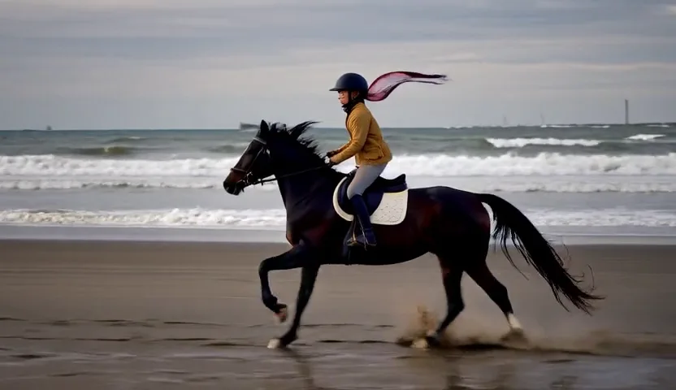

05:00Full prompt
A cinematic high-energy action shot of a young rider on a dark bay horse, wearing a tan coat, black helmet, and a distinctive scarf fluttering behind. The horse gallops along a long, flat shoreline, hooves kicking up repeated bursts of wet sand. Waves roll in parallel lines, creating a stable layered background of surf, sea, and horizon, with distant sea stacks and a faint pier silhouette. The camera tracks from slightly behind and to the side at low height, keeping the rider and horse centered as the shoreline repeats endlessly.